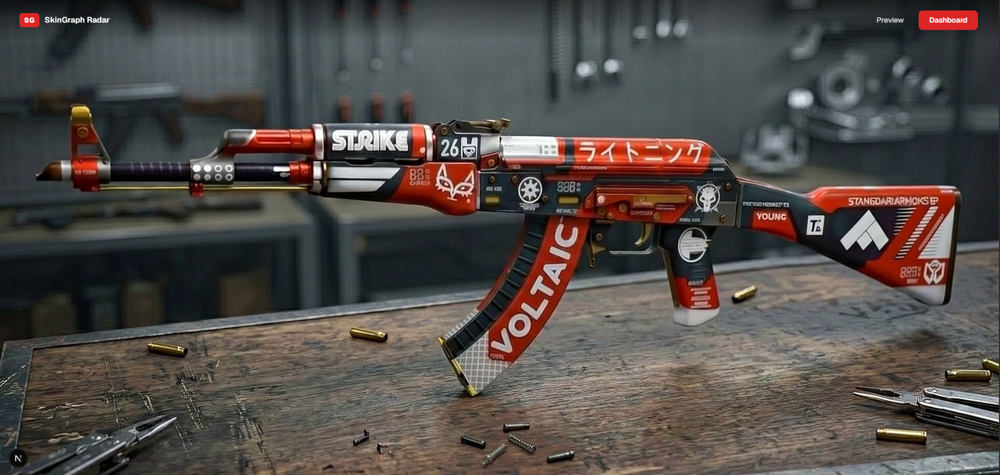
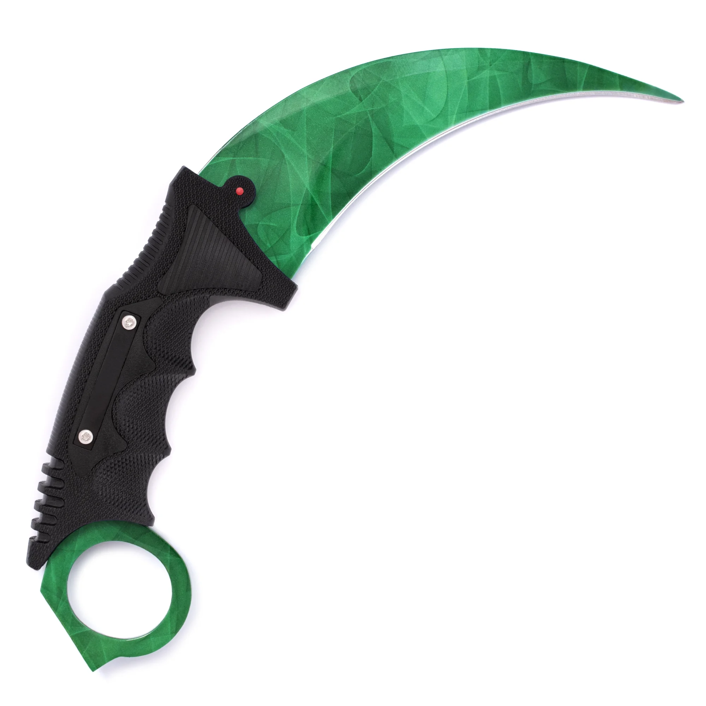
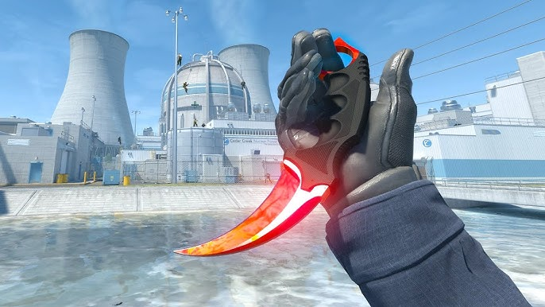
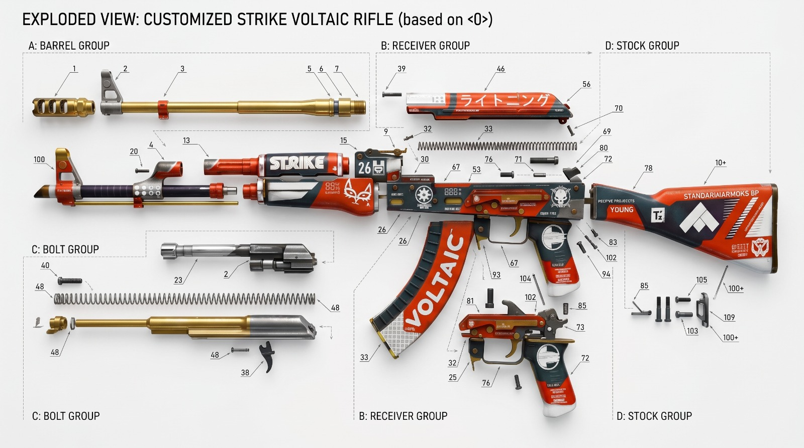

A → B → C → A
Una misma instancia atraviesa cuatro carteras y vuelve a su punto de origen en menos de 36 h.
- Saltos
- 4
- Duración
- 34 h 12 m
- Δ precio
- +22%

Seis tipos de señales recorren el mercado en paralelo. Cada una se mide, se compara entre marketplaces y se cruza con la red de compradores.
Diferencia entre el mejor precio listado y el mejor precio de compra, ajustada por fees y tiempo de venta esperado.
Listados desviados de la mediana ponderada. Filtramos las ofertas legítimas de los listados que esconden urgencia o señal.
Sobreprecio que paga el mercado por floats raros sobre el rango de referencia. Cuando se desborda, suele anticipar movimiento.
Diferencia entre el valor agregado teórico de los stickers y el precio que realmente paga el comprador final.
Tiempo medio para liquidar una posición a precio mediano. Los aceleramientos suelen llegar antes que los movimientos de precio.
CSFloat, BUFF163 y Skinport rara vez se mueven al mismo ritmo. El desfase es la oportunidad.
| Skin | Wear | CSFloat | BUFF163 | Skinport | Spread | Señal |
|---|---|---|---|---|---|---|
| AK-47 │ Voltaic | FN 0.018 | $1.842 | $1.610 | $1.789 | +14,4% | Spread amplio |
| M4A1-S │ Printstream | MW 0.094 | $612 | $598 | $641 | +7,2% | Estable |
| AWP │ Wildfire | FT 0.221 | $284 | $249 | $271 | +14,1% | Spread amplio |
| Glock-18 │ Fade | FN 0.006 | $1.120 | $1.180 | $1.144 | +5,3% | Float premium |
| USP-S │ Kill Confirmed | FT 0.182 | $402 | $380 | $418 | +10,0% | Liquidez baja |
| Karambit │ Doppler P2 | FN 0.012 | $2.940 | $2.610 | $2.802 | +12,6% | Reaparición |
El valor no está solo en la skin. Está en quién la compra, quién la vende y cómo esas conexiones se vuelven a cruzar dos, cinco, doce veces.
No acusamos. Señalamos. Cuando una skin reaparece, cuando un comprador y un trader cierran un círculo, cuando un precio se mueve fuera del rango razonable, lo dejamos marcado para que un humano lo lea.
Una misma instancia atraviesa cuatro carteras y vuelve a su punto de origen en menos de 36 h.
Una instancia aparece 3,4× sobre la mediana de 30 días sin justificación visible en stickers ni float.
El mismo float, los mismos stickers y el mismo paint seed aparecen en cuatro listados consecutivos.
Sin contacto directo entre sí, comparten dos traders intermediarios en seis transacciones consecutivas.
movimientos sospechosos patrones anómalos rutas de riesgo señales para revisar


Las leemos por separado y juntas. Cada capa explica algo que el precio, por sí solo, no alcanza a contar.

Modelo, rareza y exterior. La capa más conocida y la menos informativa por sí sola.
Un identificador único. Hace que dos AK-47 Voltaic FN no sean nunca la misma cosa.
El desgaste exacto. Donde el premium empieza a tener cuerpo medible.
Edición, posición, condición. El valor agregado real rara vez coincide con el teórico.
Cada listado, cada bajada, cada cambio de manos. La memoria de la pieza.
CSFloat, BUFF163, Skinport. Cada venue tiene su tempo y su sesgo.
Quién la compra es, muchas veces, más relevante que cuánto pagó.
El recorrido completo desde el primer listado. Las rutas dejan huella.
Una lectura compuesta. Resume todo lo anterior en una sola señal.
El dashboard no es una colección de páginas. Es una superficie continua donde cada instrumento responde a la misma pregunta desde un ángulo distinto.
| T-118 | 118 tx | +14% |
| T-204 | 71 tx | +9% |
| T-309 | 54 tx | +3% |
| T-412 | 49 tx | +18% |